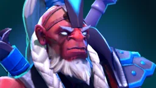

Темп добивань
| Хвилина | Добивання |
|---|---|
| 3:00 | 0–4 |
| 5:00 | 1–8 |
| 10:00 | 5–15 |
| 15:00 | 15–19 |
| 20:00 | 24–30 |
| 25:00 | 34–41 |
| 30:00 | 44–52 |
Саппортові не потрібно багато добивати: цифри — орієнтир, а не мета. Якщо почнеш забирати кріпів у керрі, тренер нагадає.

Disruptor — саппорт, який виграє бійки одним закляттям. Нижче цифри, за якими Wardly підказує на цьому герої просто в матчі: скільки добивати, коли відходити й чим рятуватися.
| Хвилина | Добивання |
|---|---|
| 3:00 | 0–4 |
| 5:00 | 1–8 |
| 10:00 | 5–15 |
| 15:00 | 15–19 |
| 20:00 | 24–30 |
| 25:00 | 34–41 |
| 30:00 | 44–52 |
Саппортові не потрібно багато добивати: цифри — орієнтир, а не мета. Якщо почнеш забирати кріпів у керрі, тренер нагадає.
Безкоштовно, для Windows 10 і 11. Офіційна інтеграція Valve — без ризику для акаунта.
Завантажити для Windows